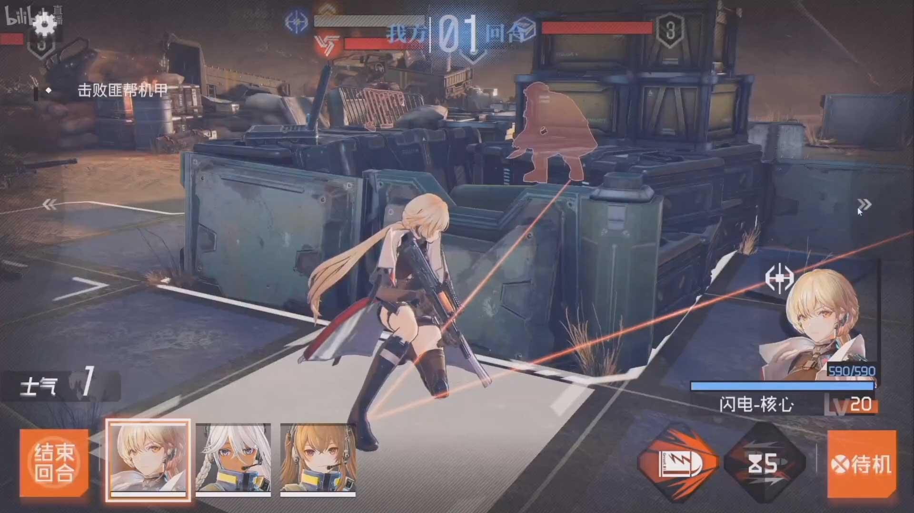
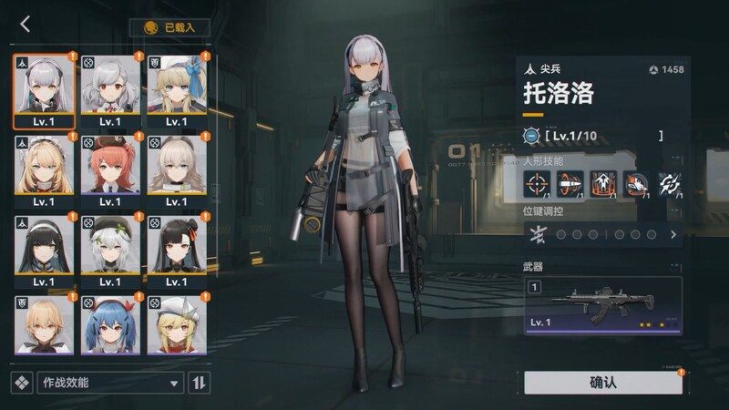
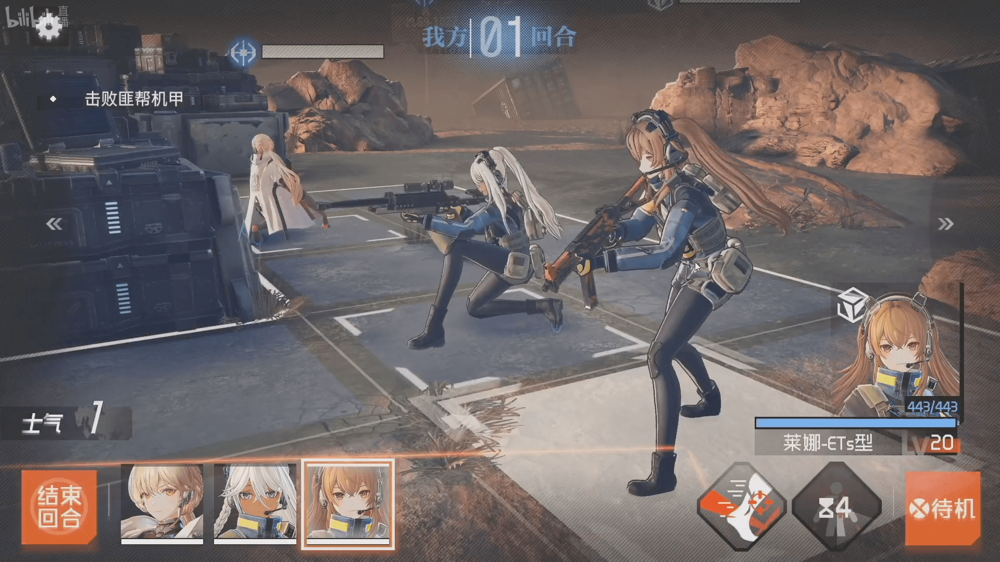
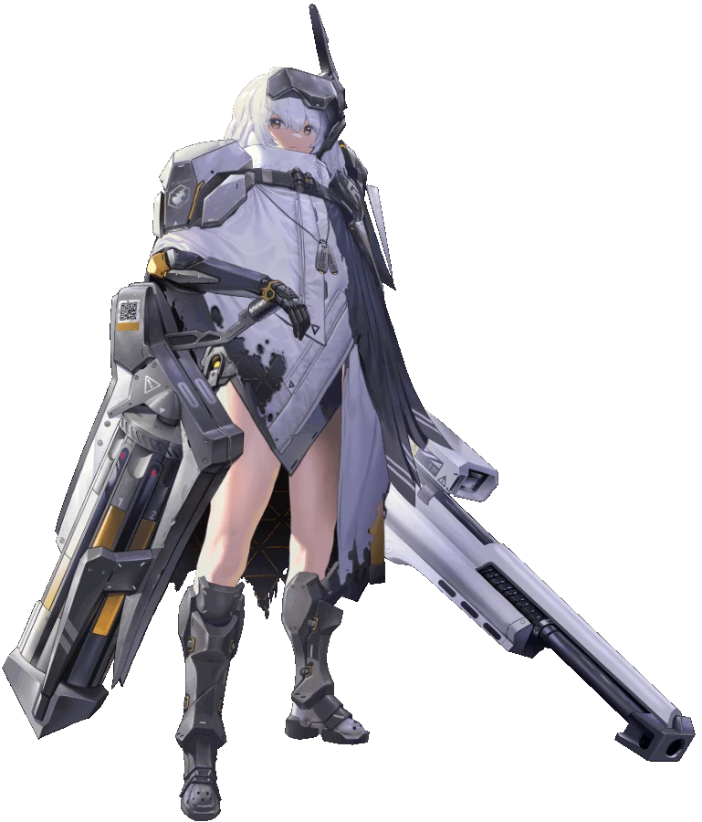
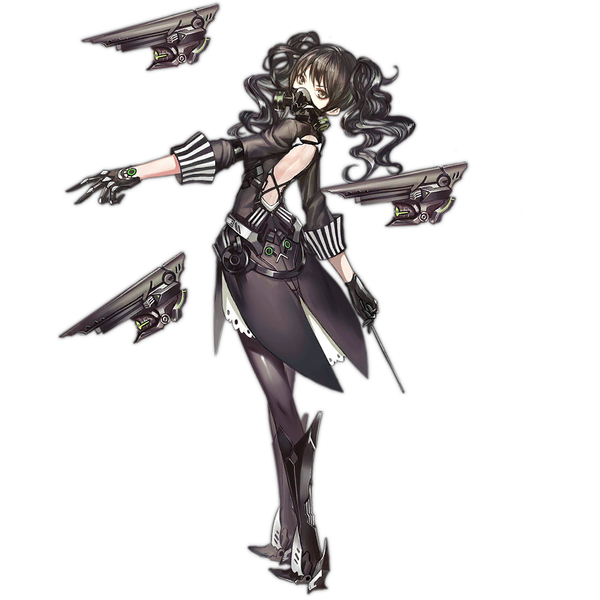
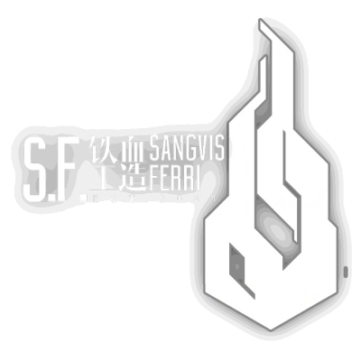
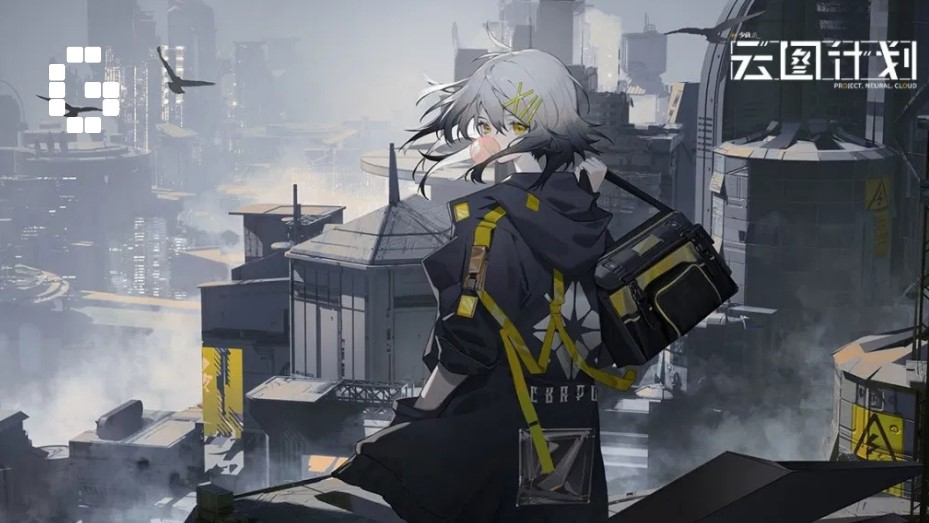
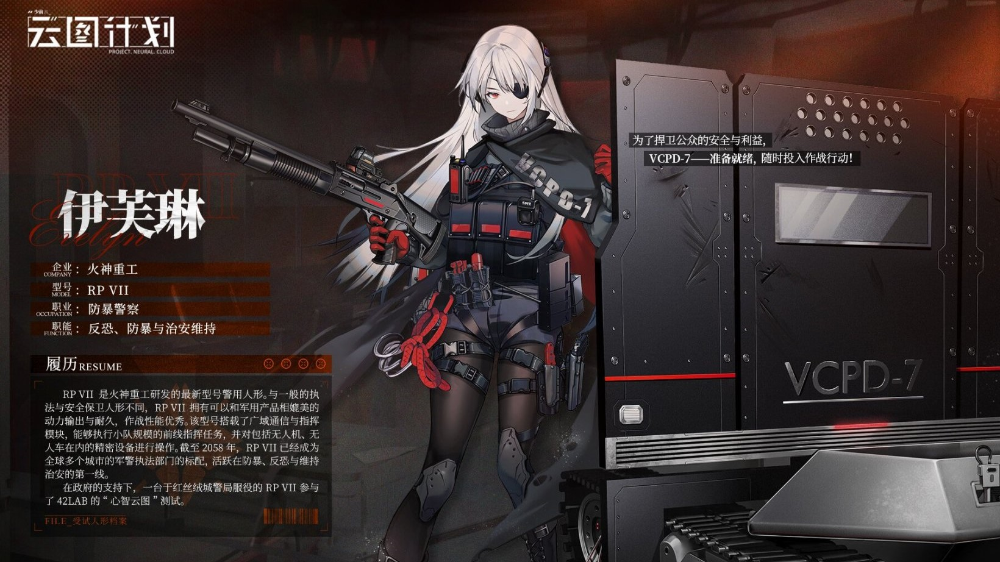
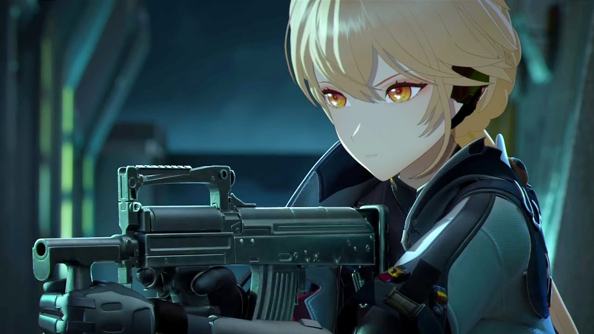

WELCOME TO THE NEW WORLD
Welcome to the new post-apocalyptic world of the future, where every day could be your last, and the struggle for dwindling resources never stops.
Once upon a time, the world plunged into chaos when newly created artificial intelligence declared war on all humanity. No one knows the reasons
why this happened, there are many rumors ranging from the fact that the AI, originally aimed at correcting climate disasters, was decided to be used
as a military machine, to the fact that the AI went crazy when the scientist who created it was killed in front of his eyes during attempts to forcefully
take over. Many years have passed since humanity defeated AI and is gradually rebuilding cities and infrastructure. However, in the wastelands, beyond the
reach of civilization, squabbling for resources and the struggle for survival continues. You are sent from the metropolis to capture a dance artifact.
Unique turn-based strategy gameplay in the spirit of XCOM games with gacha elements! You have to recruit many robotic units, both provided to you by the
factories of the metropolis, and by free androids who have lost their masters and roam the wastelands. Also, sometimes you can even find and tame machines
of war that once ran under the command of a crazy AI. You need to carefully manage resources and ammunition in order to complete assigned tasks and get to
the bottom of the secrets that the artifact contains. The gameplay, coupled with an interesting plot, will give you unforgettable emotions, and the interaction
with your robotic protégés, indistinguishable from living people, will give you a lot of impressions and make you fall in love with these characters.
Wastelands Fractions
-

Not necessarily a company, "Pilgrim" is the collective term used to refer to Androids who live on the surface, unaligned with any of the metropolis big three companies. Most of the Pilgrims hail from the early days of the SFM' invasions, possessing technology, abilities, and knowledge no one in the metropolis has. While Pilgrims also fight for survival, they largely keep away from interacting with the metropolis and anyone who hails from it, thus the Central Government keeps an eye out for Pilgrims, apprehensive to their motives but also eager to claim their knowledge and technologies, by force if necessary. Because of these factors, the metropoli's knowledge regarding Pilgrims are little.
-

"Sangvis Ferri Manufacturer" Military corporation of the past, at whose production facilities the military vehicles of the past were created. Their AI-captured factories produced deadly machines that devastated cities and towns. The factories of this company were destroyed long ago, and all that little that could be used was long ago stolen by the new metropolis or the moroders. The machines of this corporation, freed from the control of the mad AI, are now walking around the wasteland trying to survive. Androds produced by Sangvis Ferri Manufacturer are incredibly powerful opponents on the battlefield. It is still unknown why these androds are so effective, even with numerous and massive attacks on these units, not a single one has yet been captured.
-


Missilis Industry is one of the different manufacturers that exists in the metropolis While the company was once the biggest fish amongst the Big Three, its growth has noticeably slowed since the current CEO Syuen took over. With mounting pressure from the strides Elysion and Tetra have taken in their own innovations, the CEO has taken to trying to raise her company's value by any means necessary, whether it be researching cutting-edge tech, gulping down any industries their rivals haven't, or even taking to some... ethically debatable avenues.
-


Elysion is one of the different manufacturers that exists in the metropolis, being one of the Big Three. Its CEO is Ingrid. Nikkes that are from Elysion are highly emphasized on militarized structure while the others work on various tasks including railway transport, black-ops mission, and dealing with Irregulars.
-


TETRA Line or simply Tetra is one of the different manufacturers that exists in the metropolis. It is one of the Big Three in the Ark, and is owned by Mustang. Aside from Nikke production, Tetra Line is also specialized in the entertainment, fashion, and daily necessities industries.
Latest News




| 11.40.12 | Some test text representing last news |
| 11.40.12 | Some test text representing last news |
| 11.40.12 | Some test text representing last news |
| 11.40.12 | Some test text representing last news |
| 11.40.12 | Some test text representing last news |
| 11.40.12 | Some test text representing last news |
| 11.40.12 | Some test text representing last news |